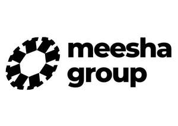
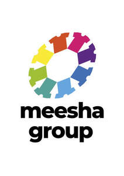
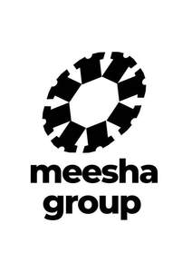
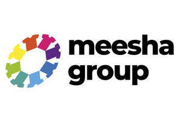

Trade Mark Journal No.2025/049 5 December 2025
UK00004263626 12 September 2025 (9,25,28,35,36,38,40,42,45)
Mark 1

Mark 2

Mark 3

Mark 4

- Class 9
- Downloadable image files; downloadable printing fonts; downloadable digital photos; downloadable computer software; Downloadable computer programs; downloadable smart phone applications (Software); Computer software downloadable from the Internet; Computer Aided Design (CAD) software; Software testing software; Software reliability software; Software; Collaboration software platforms [software]; Antimalware software; BIOS software; Teacher software; Adaptive software; Media software; Multimedia software; Privacy software; Electromechanical software; Accounting software; Animation software; Antispyware software; AI software; Blog software; Business software; Conference software; Cryptography software; Debugging software; Email software; Embedded software; Navigation software; Reporting software; Retail software; Scheduling software; System software; Graphics software; Software drivers; Interface software; Decoder software; Compiler software; Software applications; Computer software; GPS software; Educational software; Student software; Simulation software; Workflow software; Industrial software; CAD software; Music software; Entertainment software; Betting software; CAE software; Dashboard software; Diagramming software; Enterprise software; Map software; Payment software; Plugin software; Publishing software; Reference software; Server software; Software suites; Testing software; Social software; Packaged software; Education software; Games software; Game software; Operating software; Community software; Antivirus software; Collaboration software; Assistive software; Security software; Mobile software; Editing software; Manufacturing software; CAM software; Telecommunications software; Authentication software; Smartphone software; Gambling software; Interactive software; Banking software; Biometric software; Intranet software; Optimisation software; Surveying software; Logistics software; Communications software; Programming software; Platform software; Bioinformatics software; Downloadable software; Training software; Sensory software; Maintenance software; Science software; Utility software; Collaborative software; Extranet software; Inventory software; Networking software; Office software; Presentation software; Software compiler; Encryption software; Communication software; Gaming software; Application software; Computer software for computer aided software engineering; Computer software [programmes]; Pre-recorded software; Privacy protection software; Facial analysis software; Tax preparation software; Vehicle control software; Educational computer software; Business technology software; File sharing software; Online payment software; Database synchronization software; Software for smartphones; Interactive game software; 3D animation software; Application simulation software; Audio editing software; Business application software; Day trading software; Document automation software; Environmental control software; Image management software; Machine control software; Market forecasting software; Production support software; Simulation software [training]; Video editing software; Smart manufacturing software; Virtual assistant software; Home automation software; Smart home software; Industrial automation software; Building management software; Media server software; Communications server software; Mail server software; Print server software; Downloadable software, namely non-fungible tokens ; Security tokens [encryption devices]; Rescue flares, non-explosive and non-pyrotechnic; Non-volatile memories; Non-impact printers; Fashion eyeglasses; Fashion spectacles; Fashion sunglasses; Downloadable image files; downloadable digital photos; downloadable computer software; Downloadable computer programs; downloadable smart phone applications (Software); Computer software downloadable from the Internet; Computer Aided Design (CAD) software; Software testing software; Software reliability software; Software; Collaboration software platforms [software]; Antimalware software; BIOS software; Teacher software; Adaptive software; Media software; Multimedia software; Privacy software; Electromechanical software; Accounting software; Animation software; Antispyware software; AI software; Blog software; Business software; Conference software; Cryptography software; Debugging software; Email software; Embedded software; Navigation software; Reporting software; Retail software; Scheduling software; System software ; Graphics software; Software drivers; Interface software; Decoder software; Compiler software; Software applications; Computer software; GPS software; Educational software; Student software; Simulation software; Workflow software; Industrial software; CAD software; Music software; Entertainment software; Betting software; CAE software; Dashboard software; Diagramming software; Enterprise software; Map software; Payment software; Plugin software; Publishing software; Reference software; Server software; Software suites; Testing software; Social software; Packaged software; Education software; Games software; Game software; Operating software; Community software; Antivirus software; Collaboration software; Assistive software; Security software; Mobile software; Editing software; Manufacturing software; CAM software; Telecommunications software; Authentication software; Smartphone software; Gambling software; Interactive software; Banking software; Biometric software; Intranet software; Optimisation software; Surveying software; Logistics software; Communications software; Programming software; Platform software; Bioinformatics software; Downloadable software; Training software; Sensory software; Maintenance software; Science software; Utility software; Collaborative software; Extranet software; Inventory software; Networking software; Office software; Presentation software; Software compiler; Encryption software; Communication software; Gaming software; Application software; Computer software for computer aided software engineering; Computer software [programmes]; Pre-recorded software; Privacy protection software; Facial analysis software; Tax preparation software; Vehicle control software; Educational computer software; Business technology software; File sharing software; Online payment software; Database synchronization software; Software for smartphones; Interactive game software; 3D animation software; Application simulation software; Audio editing software; Business application software; Day trading software; Document automation software; Environmental control software; Image management software; Machine control software; Market forecasting software; Production support software; Simulation software [training]; Video editing software; Smart manufacturing software; Virtual assistant software; Home automation software; Smart home software; Industrial automation software; Building management software; Media server software; Communications server software; Mail server software; Print server software; Downloadable software, namely non-fungible tokens; Security tokens [encryption devices]; Rescue flares, non-explosive and non-pyrotechnic; Non-volatile memories; Non-impact printers; Fashion eyeglasses; Fashion spectacles; Fashion sunglasses; Downloadable software, namely non-fungible tokens; Security tokens [encryption devices]; Non-volatile memories; Rescue flares, non-explosive and non-pyrotechnic; all aforementioned goods unrelated to fonts, typeface and typographical characters, and unrelated to software related to fonts, typeface or typographical characters; Downloadable image files; downloadable printing fonts; downloadable digital photos; downloadable computer software; Downloadable computer programs; downloadable smart phone applications (Software); Computer software downloadable from the Internet; Computer Aided Design (CAD) software; Software testing software; Software reliability software; Software; Collaboration software platforms [software]; Anti-malware software; BIOS software; Teacher software; Adaptive software; Media software; Multimedia software; Privacy software; Electromechanical software; Accounting software; Animation software; Anti spyware software; AI software; Blog software; Business software; Conference software; Cryptography software; Debugging software; Email software; Embedded software; Navigation software; Reporting software; Retail software; Scheduling software; System software; Graphics software; Software drivers; Interface software; Decoder software; Compiler software; Software applications; Computer software; GPS software; Educational software; Student software; Simulation software; Workflow software; Industrial software; CAD software; Music software; Entertainment software; Betting software; CAE software; Dashboard software; Diagramming software; Enterprise software; Map software; Payment software; Plugin software; Publishing software; Reference software; Server software; Software suites; Testing software; Social software; Packaged software; Education software; Games software; Game software; Operating software; Community software; Antivirus software; Collaboration software; Assistive software; Security software; Mobile software; Editing software; Manufacturing software; CAM software; Telecommunications software; Authentication software; Smartphone software; Gambling software; Interactive software; Banking software; Biometric software; Intranet software; Optimisation software; Surveying software; Logistics software; Communications software; Programming software; Platform software; Bioinformatics software; Downloadable software; Training software; Sensory software; Maintenance software; Science software; Utility software; Collaborative software; Extranet software; Inventory software; Networking software; Office software; Presentation software; Software compiler; Encryption software; Communication software; Gaming software; Software; game software; downloadable computer game software for use on mobile and cellular phones; downloadable game software; non-fungible tokens (NFTs) and other application tokens; Downloadable software, namely, digital collectables; Downloadable software, namely, digital collectables sold as non-fungible tokens,Application software; Computer software for computer aided software engineering; Computer software [programmes]; Pr-recorded software; Privacy protection software; Facial analysis software; Tax preparation software; Vehicle control software; Educational computer software; Business technology software; File sharing software; Online payment software; Database synchronization software; Software for smartphones; Interactive game software; 3D animation software; Application simulation software; Audio editing software; Business application software; Day trading software; Document automation software; Environmental control software; Image management software; Machine control software; Market forecasting software; Production support software; Simulation software [training]; Video editing software; Smart manufacturing software; Virtual assistant software; Home automation software; Smart home software; Industrial automation software; Building management software; Media server software; Communications server software; Mail server software; Print server software; Downloadable software, namely non-fungible tokens ; Security tokens [encryption devices]; Rescue flares, non-explosive and non-pyrotechnic; Non-volatile memories; Non-impact printers; Fashion eyeglasses; Fashion spectacles; Fashion sunglasses. ; Trading cards [magnetic]; Trading cards [encoded- machine readable]; Graphics cards; Credit cards; Memory cards; Video cards; SIM cards; Expansion cards; Data cards; Cash cards [magnetic]; Magnetic credit cards; Magnetic card readers; Memory expansion cards; Skateboard helmets; Communication, networking and social networking software; Computer software platforms for social networking; Social software; Application software for social networking services via internet; Telecommunications networks; Computer networks; Optical networks; Network dialers; Network servers; Data networks; Network routers; Interface network modems; Computer network bridges; Computer programs for network management; Network monitoring cameras for surveillance; USB Dongles [Wireless network adapters]; VPN [virtual private network] hardware; WAN [wide area network] hardware; Video local area network controllers; Downloadable software, namely non-fungible tokens ; Rescue flares, non-explosive and non-pyrotechnic; Non-volatile memories. ; Business software; Business management software; Office and business applications; Business technology software.
- Class 25
- T-shirts; Turtleneck shirts; Tee-shirts; Mock turtleneck shirts; printed t-shirts; short sleeved T-shirts; short-sleeved or long sleeved t-shirts; snap crotch shirts for infants & toddlers; Clothes; Baby Clothes, Clothes for Sport; Jackets [clothing]; Jackets being sports clothing; Kerchiefs [clothing]; Clothing for gymnastics; shoulder wraps for clothing; Shorts [clothing] Hats (Paper)[clothing]; Leather Belts; Denims [clothing]; Hoods [clothing]; Slips [clothing]; clothing made of leather; leather garments; rainproof clothing; Waterproof clothing; Combinations [clothing]; Clothing for wear in wrestling games; nappy pants [clothing]; Clothing for babies; Sports Clothing; Clothing for Sports; Motorcyclists’ clothing; Drawers [clothing]; Water-resistant clothing; Weather resistant outer clothing; Athletic Clothing; Pockets for Clothing; Fabric Belts [clothing] Girl’s clothing; Gussets for leotards [parts of clothing]; Woolen Clothing; Silk Clothing; Danice clothing; Ladies Clothing; Clothing made of imitation leather; Leisure Clothing; Clothing; Maternity Clothing; Jogging Bottoms [clothing]; Jogging sets [clothing]; Capes, Boy’s clothing; Ready Made Clothing; Shirts; Polo Shirts, Dress Shirts; Sweat Shirts; Under shirts; Fashion hats; Face masks [fashion wear] ; Clothing; Clothes; Wristbands [clothing]; Tops [clothing]; Knitted clothing; Oilskins [clothing]; Motorcyclists' clothing; Hoods [clothing]; Leisure clothing; Infant clothing; Children's clothing; Childrens' clothing; Sports clothing; Leather clothing; Gloves [clothing]; Waterproof clothing; Plush clothing; Girls' clothing; Swaddling clothes; Knitwear [clothing]; Cloth bibs; Cyclists' clothing; Playsuits [clothing]; Slipovers [clothing]; Jerseys [clothing]; Weatherproof clothing; Casual clothing; Denims [clothing]; Combinations [clothing]; Furs [clothing]; Shorts [clothing]; Collars [clothing]; Babies' clothing; Ties [clothing]; Outer clothing; Cashmere clothing; Bandeaux [clothing]; Women's clothing; Bodies [clothing]; Embroidered clothing; Clothing layettes; Beach clothes; Beach clothing; Gabardines [clothing]; Aprons [clothing]; Men's clothing; Boys' clothing; Fishing clothing; Paper clothing; Bottoms [clothing]; Mufflers [clothing]; Handwarmers [clothing]; Cowls [clothing]; Visors [clothing]; Headbands [clothing]; Baby clothes; Infants' clothing; Drawers [clothing]; Mitts [clothing]; Rainproof clothing; Linen clothing; T-shirts; Turtleneck shirts; Tee-shirts; Mock turtleneck shirts; printed t-shirts; short sleeved T-shirts; short-sleeved or long sleeved t-shirts; snap crotch shirts for infants & toddlers; Clothes; Baby Clothes, Clothes for Sport; Jackets [clothing]; Jackets being sports clothing; Kerchiefs [clothing]; Clothing for gymnastics; shoulder wraps for clothing; Shorts [clothing] Hats (Paper)[clothing]; Leather Belts; Denims [clothing]; Hoods [clothing]; Slips [clothing]; clothing made of leather; leather garments; rainproof clothing; Waterproof clothing; Combinations [clothing]; Clothing for wear in wrestling games; nappy pants [clothing]; Clothing for babies; Sports Clothing; Clothing for Sports; Motorcyclists’ clothing; Drawers [clothing]; Water-resistant clothing; Weather resistant outer clothing; Athletic Clothing; Pockets for Clothing; Fabric Belts [clothing] Girl’s clothing; Gussets for leotards [parts of clothing]; Woolen Clothing; Silk Clothing; Danice clothing; Ladies Clothing; Clothing made of imitation leather; Leisure Clothing; Clothing; Maternity Clothing; Jogging Bottoms [clothing]; Jogging sets [clothing]; Capes, Boy’s clothing; Ready Made Clothing; Shirts; Polo Shirts, Dress Shirts; Sweat Shirts; Under shirts; Fashion hats; Face masks [fashion wear] ; Clothing; Clothes; Wristbands [clothing]; Tops [clothing]; Knitted clothing; Oilskins [clothing]; Motorcyclists' clothing; Hoods [clothing]; Leisure clothing; Infant clothing; Children's clothing; Childrens' clothing; Sports clothing; Leather clothing; Gloves [clothing]; Waterproof clothing; Plush clothing; Girls' clothing; Swaddling clothes; Knitwear [clothing]; Cloth bibs; Cyclists' clothing; Playsuits [clothing]; Slipovers [clothing]; Jerseys [clothing]; Weatherproof clothing; Casual clothing; Denims [clothing]; Combinations [clothing]; Furs [clothing]; Shorts [clothing]; Collars [clothing]; Babies' clothing; Ties [clothing]; Outer clothing; Cashmere clothing; Bandeaux [clothing]; Women's clothing; Bodies [clothing]; Embroidered clothing; Clothing layettes; Beach clothes; Beach clothing; Gabardines [clothing]; Aprons [clothing]; Men's clothing; Boys' clothing; Fishing clothing; Paper clothing; Bottoms [clothing]; Mufflers [clothing]; Handwarmers [clothing]; Cowls [clothing]; Visors [clothing]; Headbands [clothing]; Baby clothes; Infants' clothing; Drawers [clothing]; Mitts [clothing]; Rainproof clothing; Linen clothing; T-shirts; Turtleneck shirts; Tee-shirts; Mock turtleneck shirts; printed t-shirts; short sleeved T-shirts; short-sleeved or long sleeved t-shirts; snap crotch shirts for infants & toddlers; Clothes; Baby Clothes, Clothes for Sport; Jackets [clothing]; Jackets being sports clothing; Kerchiefs [clothing]; Clothing for gymnastics; shoulder wraps for clothing; Shorts [clothing] Hats (Paper)[clothing]; Leather Belts; Denims [clothing]; Hoods [clothing]; Slips [clothing]; clothing made of leather; leather garments; rainproof clothing; Waterproof clothing; Combinations [clothing]; Clothing for wear in wrestling games; nappy pants [clothing]; Clothing for babies; Sports Clothing; Clothing for Sports; Motorcyclists’ clothing; Drawers [clothing]; Water-resistant clothing; Weather resistant outer clothing; Athletic Clothing; Pockets for Clothing; Fabric Belts [clothing] Girl’s clothing; Gussets for leotards [parts of clothing]; Woolen Clothing; Silk Clothing; Dance clothing; Ladies Clothing; Clothing made of imitation leather; Leisure Clothing; Clothing; Maternity Clothing; Jogging Bottoms [clothing]; Jogging sets [clothing]; Capes, Boy’s clothing; Ready Made Clothing; Shirts; Polo Shirts, Dress Shirts; Sweat Shirts; Under shirts; Fashion hats; Face masks [fashion wear] ; Clothing; Clothes; Wristbands [clothing]; Tops [clothing]; Knitted clothing; Oilskins [clothing]; Motorcyclists' clothing; Hoods [clothing]; Leisure clothing; Infant clothing; Children's clothing; Childrens' clothing; Sports clothing; Leather clothing; Gloves [clothing]; Waterproof clothing; Plush clothing; Girls' clothing; Swaddling clothes; Knitwear [clothing]; Cloth bibs; Cyclists' clothing; Playsuits [clothing]; Slipovers [clothing]; Jerseys [clothing]; Weatherproof clothing; Casual clothing; Denims [clothing]; Combinations [clothing]; Furs [clothing]; Shorts [clothing]; Collars [clothing]; Babies' clothing; Ties [clothing]; Outer clothing; Cashmere clothing; Bandeaux [clothing]; Women's clothing; Bodies [clothing]; Embroidered clothing; Clothing layettes; Beach clothes; Beach clothing; Gabardines [clothing]; Aprons [clothing]; Men's clothing; Boys' clothing; Fishing clothing; Paper clothing; Bottoms [clothing]; Mufflers [clothing]; Handwarmers [clothing]; Cowls [clothing]; Visors [clothing]; Headbands [clothing]; Baby clothes; Infants' clothing; Drawers [clothing]; Mitts [clothing]; Rainproof clothing; Linen clothing.
- Class 28
- Token-operated video game machines. .
- Class 35
- Retail services connected with the sale of tablet computer cases and smartphone mobile cases; Retail services relating to clothing; Retail services in relation to luggage; Retail services in relation to bags; Online Retail services relating to clothing; Retail services in relation to computer software; Fashion show exhibitions for commercial purposes; Organization of fashion shows for promotional purposes; Fashion shows for promotional purposes (Organization of -); Organisation of fashion shows for commercial purposes; Retail services in relation to fashion accessories; Organization of fashion parades for sales promotion purposes; Promoting the sale of fashion goods through promotional articles in magazines; Retail services connected with the sale of tablet computer cases and smartphone mobile cases; Retail services connected with the sale of tablet computer cases and smartphone mobile cases; Retail services relating to clothing; Retail services in relation to luggage; Retail services in relation to bags; Online Retail services relating to clothing; Retail services in relation to computer software; Fashion show exhibitions for commercial purposes; Organization of fashion shows for promotional purposes; Fashion shows for promotional purposes (Organization of -); Organisation of fashion shows for commercial purposes; Retail services in relation to fashion accessories; Organization of fashion parades for sales promotion purposes; Promoting the sale of fashion goods through promotional articles in magazines; all aforementioned services unrelated to fonts, typeface and typographical characters, and unrelated to software related to fonts, typeface or typographical characters; Database management; maintain and record ownership of digital illustrations; maintain and record ownership of digital illustrations represented by non-fungible tokens; provision of an online marketplace for buyers and sellers of goods and services; providing an online marketplace for exchanging digital collectibles via a website; information, advisory and consultancy services relating to all of the aforesaid services; retail store services in connection with the sale of jewellery, imitation jewellery, hats, shoes, sneakers, socks, t-shirts, athletic shirts, baseball caps and hats, boat shoes, cycling caps, graphic T-shirts, hoodies, beanies, cardigans, sweaters, skateboards, skateboard decks, toys, plush toys, PVC toy figures; on-line retail store services in connection with the sale of jewellery, imitation jewellery, hats, shoes, sneakers, socks, t-shirts, athletic shirts, baseball caps and hats, boat shoes, cycling caps, graphic T-shirts, hoodies, beanies, cardigans, sweaters, skateboards, skateboard decks, toys, plush toys, PVC toy figures, Retail services connected with the sale of tablet computer cases and smartphone mobile cases; Retail services relating to clothing; Retail services in relation to luggage; Retail services in relation to bags; Online Retail services relating to clothing; Retail services in relation to computer software; Fashion show exhibitions for commercial purposes; Organization of fashion shows for promotional purposes; Fashion shows for promotional purposes (Organization of -); Organisation of fashion shows for commercial purposes; Retail services in relation to fashion accessories; Organization of fashion parades for sales promotion purposes; Promoting the sale of fashion goods through promotional articles in magazines; Trade information; Providing trade information; Trade promotional services; Shows (Arranging trade -); Arranging of trade fairs; Conducting of trade shows; Trade show management services; Arranging of trade shows; Organizing of trade shows; Provision of trade information; Organisation of trade fairs; Trade shows (Arranging of -); Organization of trade fairs; Trade shows (Conducting of -); Retail services relating to jewelry; Business networking; Business networking services; Career networking services; Online business networking services; Auctioning via telecommunication networks; Providing business information in the field of social media; Providing marketing consulting in the field of social media; Advertising services to promote public awareness of social issues; Advertisement via mobile phone networks; Advertising and marketing services provided by means of social media; Business management of sporting clubs; Advice relating to the business operation of fitness clubs; Book club services retailing books to its members; Advice relating to the business management of fitness clubs; Advice relating to the business management of health clubs; Advice relating to the business operation of health clubs; Customer club services, for commercial, promotional and/or advertising purposes; Business consulting; Business consultancy; Business consulting for enterprises; Business planning and business continuity consulting; Business management; Business networking; Consultancy regarding business organisation and business economics; Business organisation; Commercial business management; Business management advice relating to manufacturing business; Business marketing services; Business planning; Business auditing; Business marketing consultancy; Business administration; Business acquisitions; Business management for shops; Business expertise; Business information for enterprises; Business organization consultancy; Business organization consulting; Business research; Research (Business -); Consultancy (Professional business -); Professional business consultancy; Business consultancy (Professional -); Business inquiries; Inquiries (Business -); Business planning services for enterprises; Business promotion; Business strategy services; Business organisation consulting; Business research for new businesses; Business management of restaurants; Business appraisals; Appraisals (Business -); Business appraisal; Business Enquiries; Professional business consulting; Hotels (Business management of -); Business consultancy to firms; Business organization and operation consultancy; Business administration consultancy; Business consultancy to individuals; Business studies; Business marketing consulting services; Business consulting services; Business management and consulting; Business management consulting; Business management and enterprise organization consultancy; Advisory services relating to business management and business operations; Business management of entertainers; Business advice; Business management services; Business networking services; Business assistance relating to business image; Business organization advice; Business management for a trade company and for a service company; Business management and consultancy; Business management consultancy; Business consultation; Business management organisation; Business investigations; Strategic business consultancy; Business invoicing services; Investigations (Business -); Business information; Information (Business -); Business planning services; Business appraisals and evaluations in business matters; Business consultancy services; Business administration services; Business management of theaters; Business analysis; Business management of airports; Business planning consultancy; Business merger services; Business surveys; Surveys (Business -); Business assistance; Business investigation; Assistance to commercial enterprises in the management of their business; Business secretarial services; Business and market research; Business organization and management consulting; Professional business consultation relating to the operation of businesses; Business relocation consulting; Business management and organization consultancy; Business research services; Business profit analysis; Business management of musicians; Business organisation consultancy; Business intelligence services; Administration of the business affairs of franchises; Business project management; Business appraisal services; Business management of actors; Professional business consultancy services; Business organisation and management consulting; Business promotion services; Planning concerning business management, namely, searching for partners for amalgamations and business take-overs as well as for business establishments; Management of business [for others]; Business expertise services; Business management of hospitals; Business appraisal consultancy; Organisation of exhibitions for business or commerce; Business management of an airline company; Business accounts management; Business services relating to the establishment of businesses; Commercial assistance in business management; Business management of retail outlets; Business management of models; Business organizational consultation; Business supervision; Business process management; Business organisation advice; Business partnership search; Administration of business affairs; Business representative services; Business management of sports people; Business research consulting; Business administrative services for the relocation of businesses; Business management and consulting services; Business management consulting services; Chartered accountancy business services; Operational business assistance to enterprises; Business marketing consultation services; Acquisitions (Business -) consulting services; Company management [for others]; Company record-keeping; Consultancy regarding the organization or managing of a trade company; Company office secretarial services; Business advisory services relating to company performance; Acquisition of business information relating to company status; Compilation of company information; Acquisition of business information relating to company activities; Company management, including consultancy in demographic matters; Company record keeping [for others]; Business management and organization consultancy services; Consulting services in business organization and management; Analysis of company attitudes; Business management and organisation consultancy; Business management organisation consultancy; Business organisation and management consultancy; Business management assistance for industrial or commercial companies; Analysis of company behaviour; Business organisation and management consulting services; Business management and organisation consultancy services; Business organization and management consultancy including personnel management; Outsourced administrative management for companies; Business consultancy services relating to manufacturing; Advisory services relating to the corporate structure of companies; Employee leasing; Business management consultancy, also via the Internet; Business management and consultancy services; Business management consultancy services; Business project management services; Consultancy relating to business management and organisation; Providing business management start-up support for other businesses; Business organisation and management consultancy in the field of personnel management; Consultancy relating to business organisation; Business process management consultancy; Corporate management consultancy; Management of business offices for others; Business consultancy services relating to product development; Corporate management consultancy services; Business administration of employee share schemes; Advertising services to create corporate and brand identity; Transportation fleet (business management of -) [for others]; Consultancy relating to business acquisition; Professional consultancy relating to business management; Outsourcing services in the field of business operations; Business management of insurance agencies and brokers on an outsourcing basis; Business management consultancy and advisory services; Consultancy and advisory services for business management; Business management services relating to the acquisition of businesses; Advisory services relating to business organization; Brokerage of name and address based lists; Business file management; Business records management; Advice in the field of business management and marketing; Business assistance relating to corporate identity; Business management consultancy in the field of corporate travel; Business advisory services relating to business liquidations; Business advice relating to restaurant franchising; Business management advice; Business and commercial information services; Advice relating to business organization; Business information services; Business management of hotels; Business management assistance in the field of franchising; Research of business information; Business introduction services; Providing business marketing information; Business information agency services; Business brokerage services; Assistance in franchised commercial business management; Research for business purposes; Consultancy relating to business advertising; Business administration and management; Business management and administration.
- Class 36
- Issuing tokens of value; Issue of tokens of value; Tokens of value (Issue of -); Issuing of tokens of value; Issuance of tokens of value; Provision of prepaid cards and tokens; Issue of tokens, coupons and vouchers of value; Issuing tokens of value as a reward for customer loyalty; Issue and redemption of tokens of value; Issuing tokens of value in the nature of gift vouchers; Issuing of tokens of value in relation to incentive schemes; Providing information relating to the issue of tokens of value; Issuing tokens of value as part of a customer membership scheme; Issuing of tokens of value in relation to customer loyalty schemes; Issuing tokens of value; Issue of tokens of value; Tokens of value (Issue of -); Issuing of tokens of value; Issuance of tokens of value; Provision of prepaid cards and tokens; Issue of tokens, coupons and vouchers of value; Issuing tokens of value as a reward for customer loyalty; Issue and redemption of tokens of value; Issuing tokens of value in the nature of gift vouchers; Issuing of tokens of value in relation to incentive schemes; Providing information relating to the issue of tokens of value; Issuing tokens of value as part of a customer membership scheme; Issuing of tokens of value in relation to customer loyalty schemes; Issuing tokens of value; Issue of tokens of value; Tokens of value (Issue of -); Issuing of tokens of value; Issuance of tokens of value; Provision of prepaid cards and tokens; Issue of tokens, coupons and vouchers of value; Issuing tokens of value as a reward for customer loyalty; Issue and redemption of tokens of value; Issuing tokens of value in the nature of gift vouchers; Issuing of tokens of value in relation to incentive schemes; Providing information relating to the issue of tokens of value; Issuing tokens of value as part of a customer membership scheme; Issuing of tokens of value in relation to customer loyalty schemes; Issuing tokens of value; Issue of tokens of value; Tokens of value (Issue of -); Issuing of tokens of value; Issuance of tokens of value; Provision of prepaid cards and tokens; Issue of tokens, coupons and vouchers of value; Issuing tokens of value as a reward for customer loyalty; Issue and redemption of tokens of value; Issuing tokens of value in the nature of gift vouchers; Issuing of tokens of value in relation to incentive schemes; Providing information relating to the issue of tokens of value; Issuing tokens of value as part of a customer membership scheme; Issuing of tokens of value in relation to customer loyalty schemes; Trading in options; Trading in stocks; Trading in futures; Trading of stocks; Derivatives trading services; Credit card and payment card services; Investment clubs; Management of investments for mutual clubs and societies.
- Class 38
- Provision of an online community for registered users to access a collaborative graffiti board. ; Providing online forums; Provision of on-line forums; Providing access to Internet forums; Providing Internet chatrooms and Internet forums; Forums [chat rooms] for social networking; Providing online forums for communication in the field of electronic games; Electronic exchange of messages via chat lines, chatrooms and Internet forums; Providing on-line forums for transmission of messages among computer users; Electronic communication by means of chatrooms, chat lines and Internet forums; Chatroom services for social networking; Chat room services for social networking; Providing on-line chat rooms for social networking; Electronic network communications; Telecommunication network services; Network conferencing services; Communication network consultancy; Computer network communication services; Mobile telecommunication network services; Mobile telecommunications network services; Radio communication network services; Digital network telecommunications services; Providing access to global computer networks and other computer networks; Providing access to telecommunication networks; Communications via multinational telecommunication networks; Message sending via computer networks; Communication via fibre optical networks; Communications by fibre optic networks; Communications by fibre-optic networks; Local area networks (Operation of -); Communication services over computer networks; Providing access to computer networks; Value added network [communication] services; Data transmission via telematic networks; Operation of a telecommunications network; Communication via optical fibre networks; Communication by fibre optic networks; Telecommunications services between computer networks; Operation of television cable networks; Local area networks (Leasing of -); Communications by fiber optic networks; Video transmission via digital networks; Communication via virtual private networks. .
- Class 40
- Printing, Pattern Printing, Printing (Pattern-); Portrait Printing; Printing (Photographic); Photographic Printing; Photo-Printing; Letterpress Printing; Textile Printing; Silkscreen Printing; Screen Printing; Printing Services; Wool Printing; Digital Printing; Printing of Photos; T-shirt Printing; Silk Screen printing; Stationery Printing Services; Printing of Photographic film; Pattern Printing on textiles; Pattern Printing on fabric; Printing of Patterns on textiles; Printing of images on objects; Printing of documents from digital media; Printing of decorative patterns on gift wrap; Printing of digitally stored pictures and photographs; Printing of photographic images from digital media; Sublimation Printing; Dye Sublimation Printing; Digital sublimation printing Form vacuum printing; Sublimation litho printing; Garment printing; Stationery Printing Services; Printing of Photographic film; Printing of decorative patterns on gift wrap; Sublimation Printing; Dye Sublimation Printing; Form vacuum printing; Printing, Pattern Printing, Printing (Pattern-); Portrait Printing; Printing (Photographic); Photographic Printing; Photo-Printing; Letterpress Printing; Textile Printing; Silkscreen Printing; Screen Printing; Printing Services; Wool Printing; Digital Printing; Printing of Photos; T-shirt Printing; Silk Screen printing; Stationery Printing Services; Printing of Photographic film; Pattern Printing on textiles; Pattern Printing on fabric; Printing of Patterns on textiles; Printing of images on objects; Printing of documents from digital media; Printing of decorative patterns on gift wrap; Printing of digitally stored pictures and photographs; Printing of photographic images from digital media; Sublimation Printing; Dye Sublimation Printing; Digital sublimation printing Form vacuum printing; Sublimation litho printing; Garment printing; Printing, Pattern Printing, Printing (Pattern-); Portrait Printing; Printing (Photographic); Photographic Printing; Photo-Printing; Letterpress Printing; Textile Printing; Silkscreen Printing; Screen Printing; Printing Services; Wool Printing; Digital Printing; Printing of Photos; T-shirt Printing; Silk Screen printing; Stationery Printing Services; Printing of Photographic film; Pattern Printing on textiles; Pattern Printing on fabric; Printing of Patterns on textiles; Printing of images on objects; Printing of documents from digital media; Printing of decorative patterns on gift wrap; Printing of digitally stored pictures and photographs; Printing of photographic images from digital media; Sublimation Printing; Dye Sublimation Printing; Digital sublimation printing Form vacuum printing; Sublimation litho printing; Garment printing.
- Class 42
- Software engineering; Software creation; Software design; Software development; Software authoring; Software research; Software installation; Fashion design; Design of fashion accessories; Fashion design consulting services; Providing information about fashion design services; Software engineering; Software creation; Software design; Software development; Software authoring; Software research; Software installation; Fashion design; Design of fashion accessories; Fashion design consulting services; Providing information about fashion design services; all aforementioned services unrelated to fonts, typeface and typographical characters, and unrelated to software related to fonts, typeface or typographical characters; Software engineering; Software creation; Software design; Software development; Software authoring; Software research; Software installation; Fashion design; Design of fashion accessories; Fashion design consulting services; Providing information about fashion design services; Design of trade marks; Programming of software for Internet portals, chatrooms, chat lines and Internet forums; Computer network services; Research in the field of social media; Scientific research in the field of social medicine; Telecommunication network security consultancy; Monitoring of network systems; Computer network configuration services; Computer network design for others; Design and development of networks; Development of computer based networks; Planning [design] of clubs; Services for the planning [design] of clubs; Design of brand names; Business card design; Business card design services; Design of business premises; Design of business premises for the tyre trade.
- Class 45
- Software licensing; Software licensing; all aforementioned services unrelated to fonts, typeface and typographical characters, and unrelated to software related to fonts, typefaces or typographical characters; Online social networking services; online social networking services provided through a members-only website; information, advisory and consultancy services relating to all of the aforesaid services,Software licensing; Online social networking services; On-line social networking services; Internet-based social networking services; Dating services provided through social networking; Social work service ; Social introduction agencies; Online social networking services accessible by means of downloadable mobile applications; social introduction agency services; Social introduction agency services; Legal services relating to social insurance claims; Domain name registration services; Domain name advisory services; Leasing of internet domain names; Registration of domain names [legal services]; Domain names (Registration of -) [legal services].
PRNT (Holdings) Limited